首爾樂天世界塔

樂天世界塔Seoul Sky位於首爾樂天世界塔117-123層，是世界第五高樓的觀景台，高達500米，提供360度首爾市景。擁有世界最快雙層電梯及最高透明玻璃地板觀景台。遊客可欣賞漢江、城市天際線，體驗媒體藝術展覽、咖啡館及高級休息室。融合韓國文化元素，如綜藝節目拍攝地，適合欣賞日夜景觀，感受高空震撼。
評價： 首爾樂天世界塔位於世界第五高樓的117-123層！等待電梯時，可參觀地下1-2層的藝術展覽區，瞭解韓國文化。作為韓國綜藝節目《無限挑戰》和《我家的熊孩子》的拍攝地，Seoul Sky的媒體秀令人震撼，體驗非常棒！
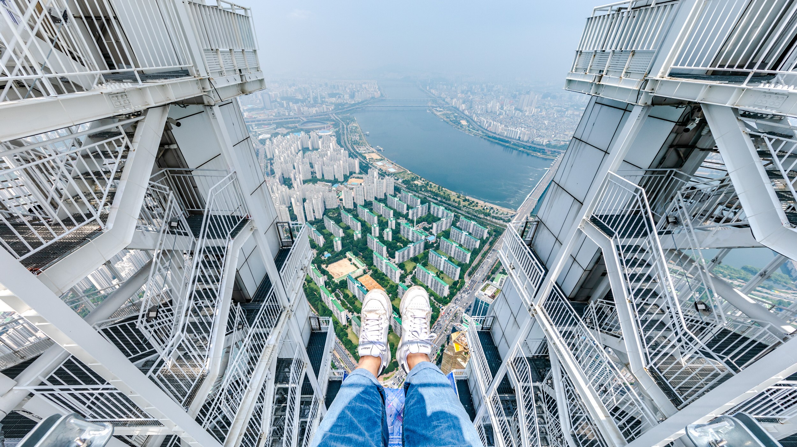
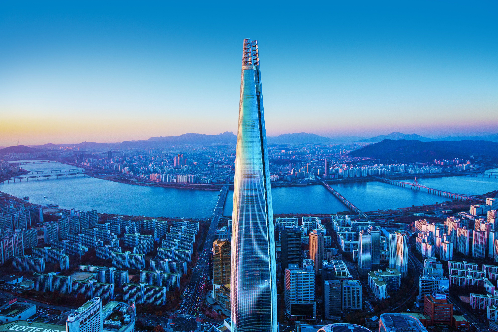
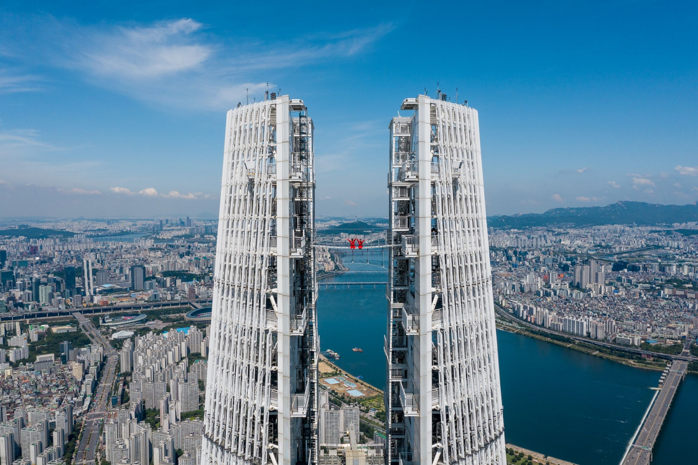
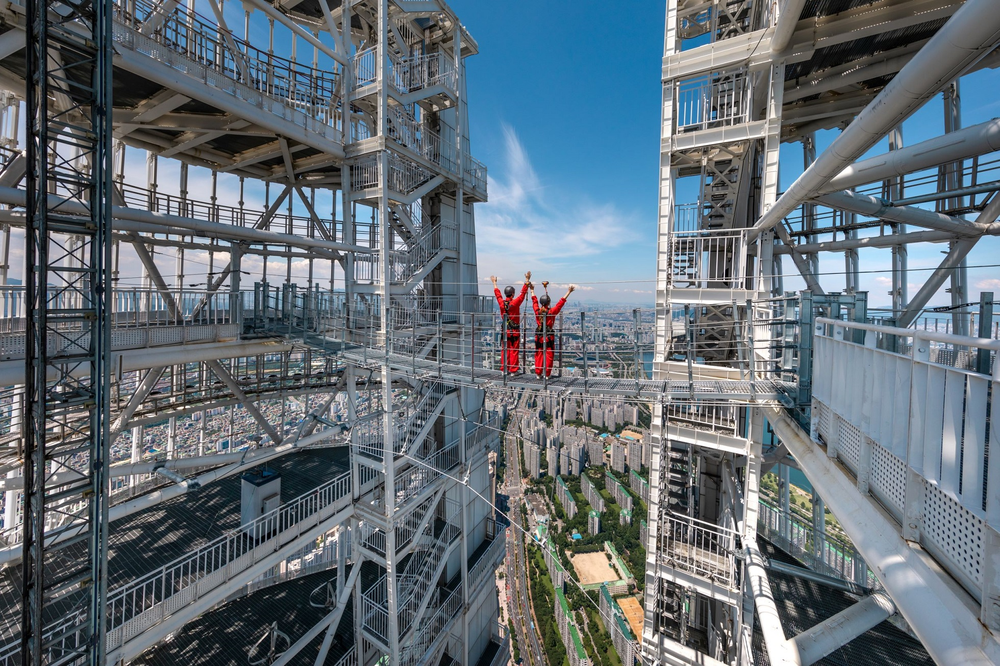
 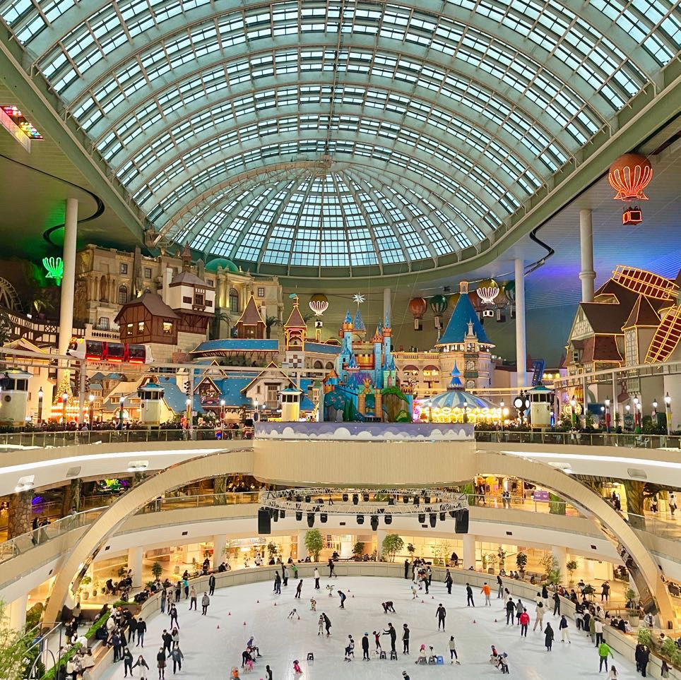
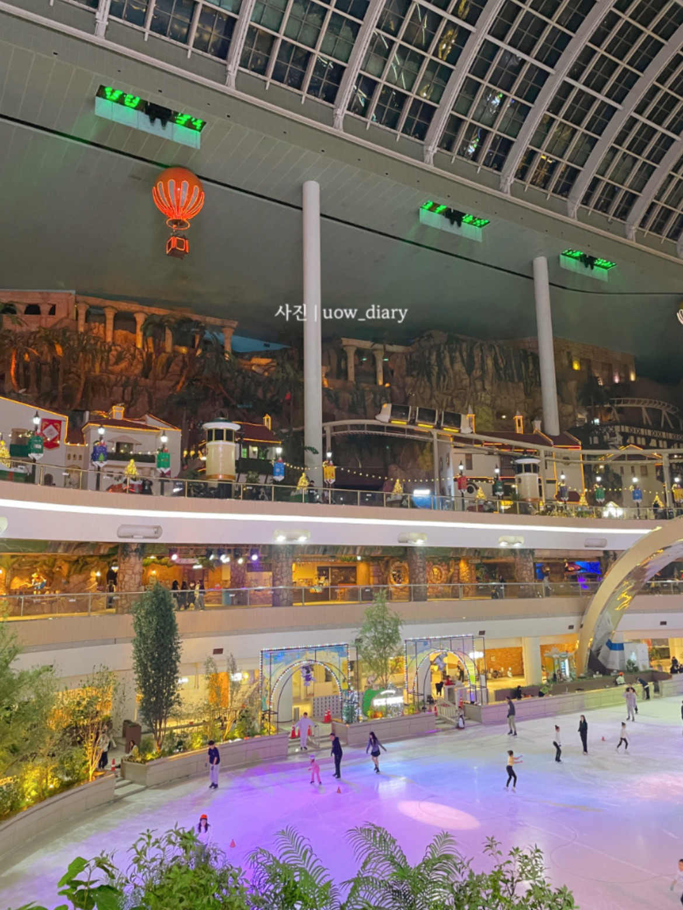
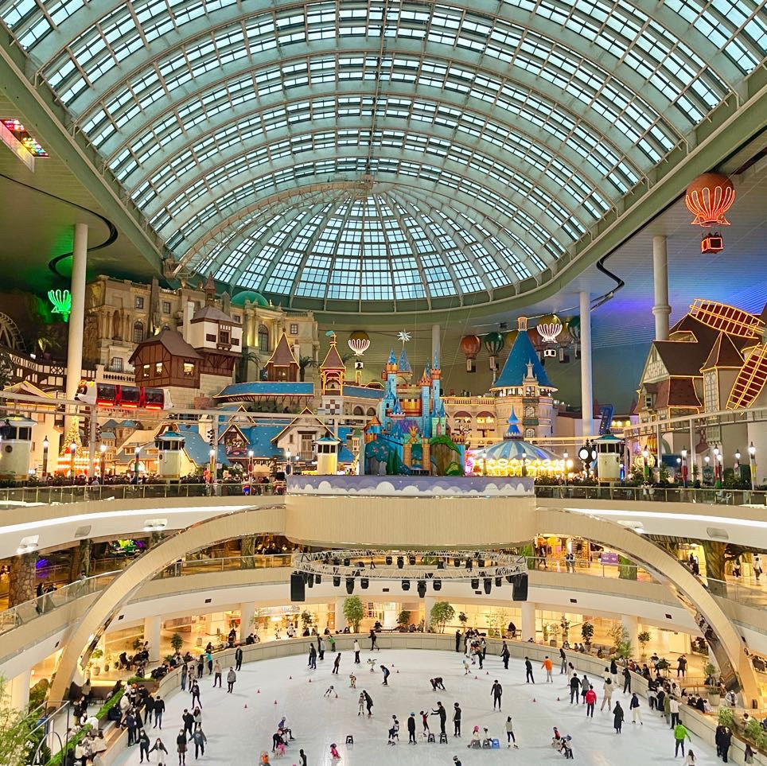
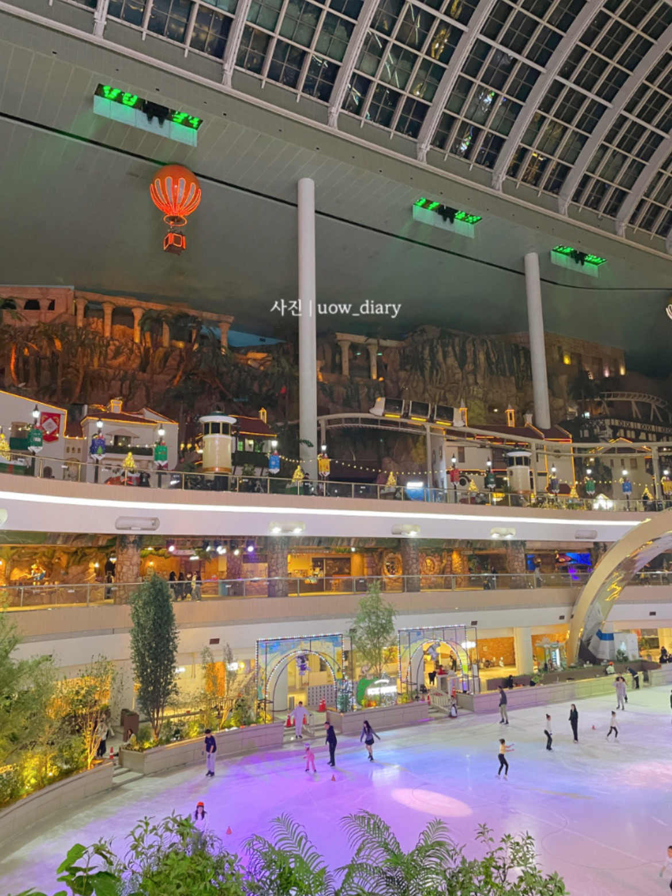
 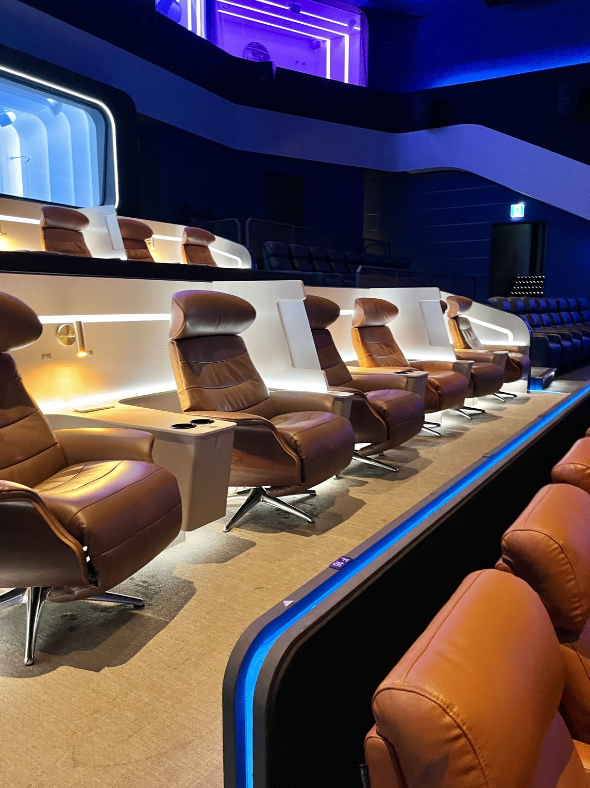
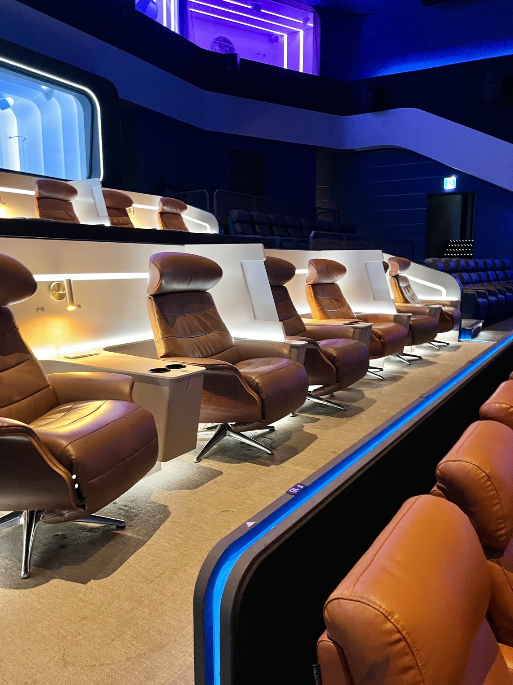
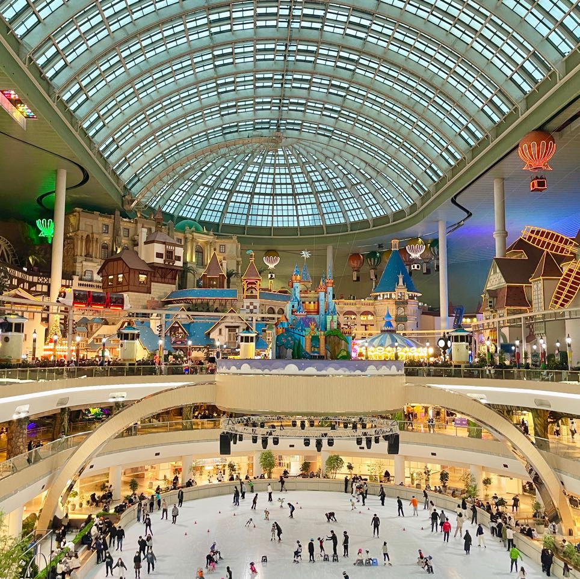
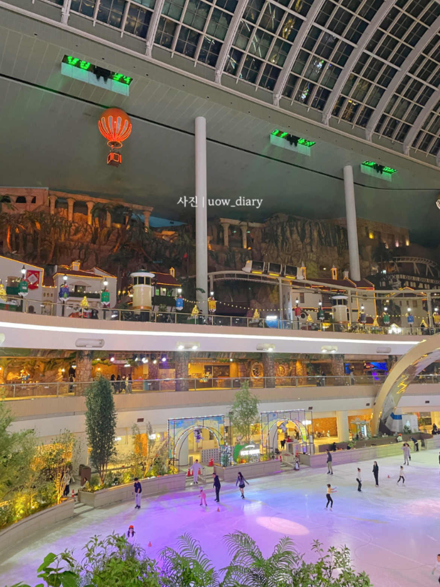
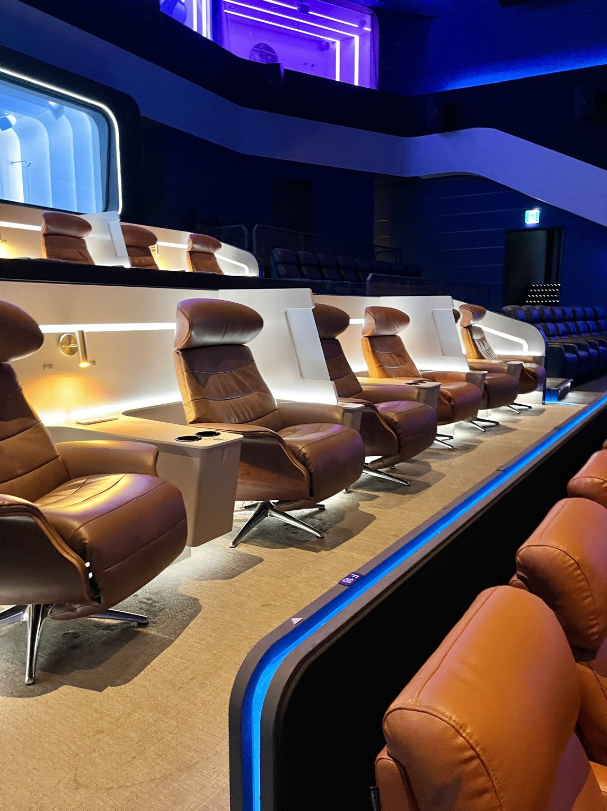